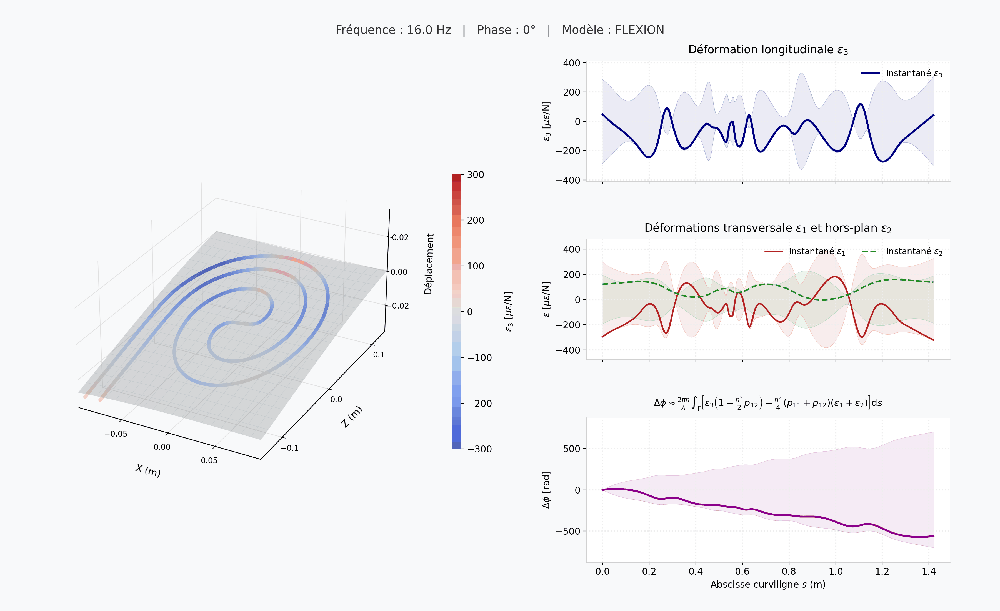

Que voit-on ?
La plaque vibre à 58 Hz. La couleur de la fibre indique la déformation longitudinale ε3 : en rouge elle est étirée, en bleu elle est comprimée.
Les courbes montrent les déformations ε1, ε2 et ε3 le long de la fibre, ainsi que la phase optique cumulée Δφ, qui détermine la sensibilité de l'interféromètre aux vibrations.